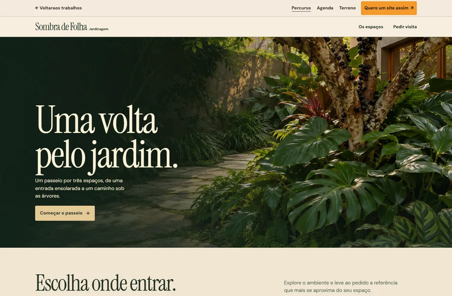
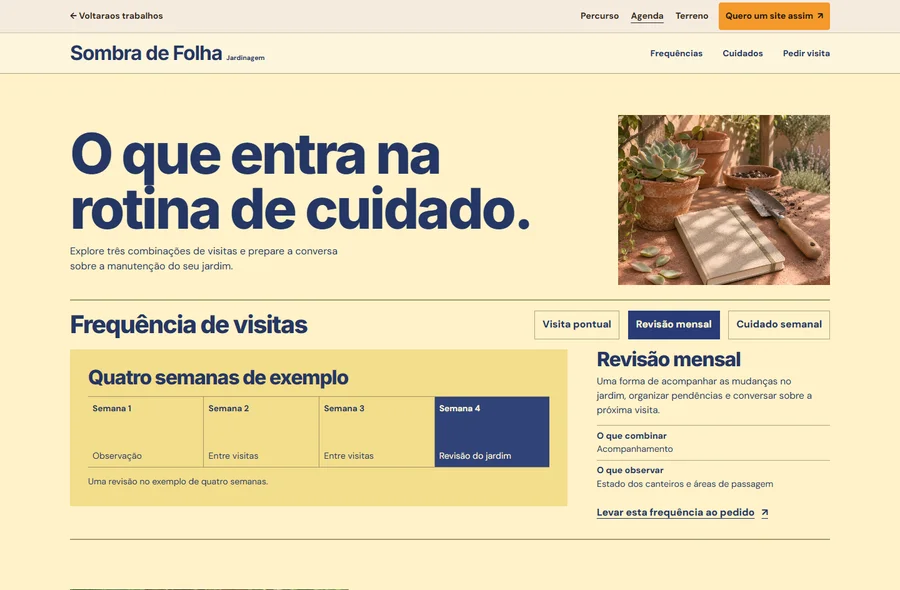
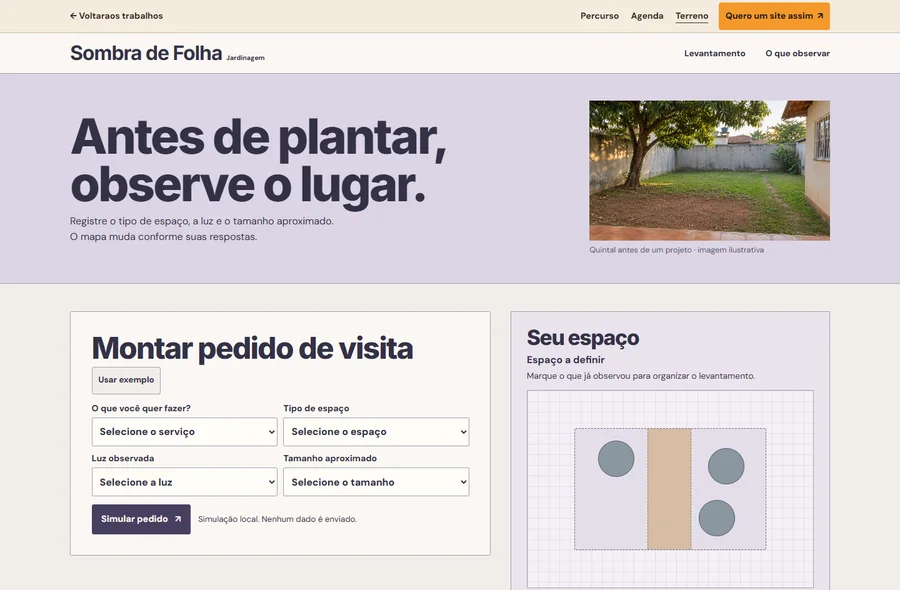

Percurso
Um passeio por três espaços com fotos, luz e referências para o pedido.
Abrir demonstraçãoTrês maneiras de começar um trabalho de jardinagem.

Um passeio por três espaços com fotos, luz e referências para o pedido.
Abrir demonstração
Um calendário que muda a rotina conforme a frequência escolhida.
Abrir demonstração
Uma ficha de levantamento com esquema que responde às observações.
Abrir demonstração